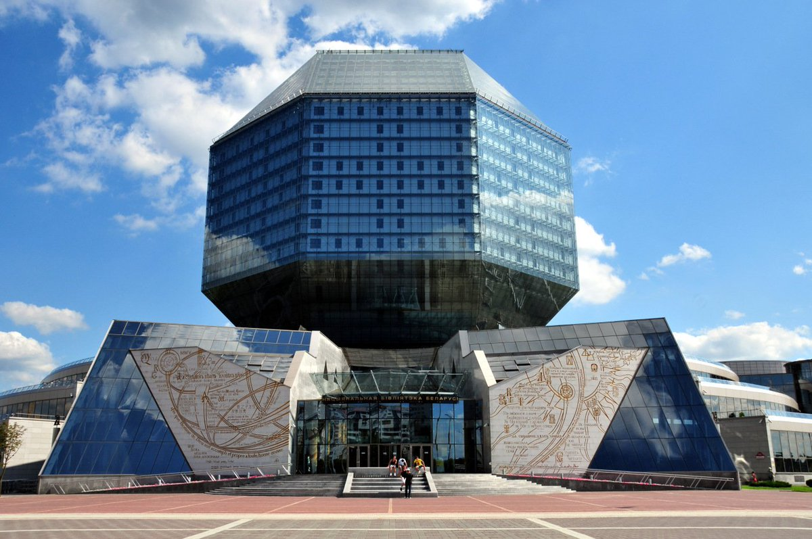

Достопримечательности
Во время Великой Отечественной войны почти все городские здания были разрушены и восстановлены только после победы над немцами.
Та малая часть исторических памятников, которые уцелели или были отреставрированы, всегда привлекает к себе гостей города.
Архитектурный комплекс Троицкое предместье — исторический район Минска, где сохранились уникальные здания XVI-XIX веков.
В старину здесь был гончарный центр, а в Средние века предместье выполняло оборонительную функцию.
Ранняя история
Неизвестно, когда город был основан, но впервые название Меньск (Менеск) зафиксировано в «Повести временных лет» 1067 года в связи с войнами славянских князей.
В начале XIV столетия Минское княжество вошло в состав Великого княжества Литовского, а в следующем веке оно получило право на самоуправление. Город начал активно застраиваться крепостями, монастырями, домами купцов и мастеровых. В начале XVI века Минск несколько раз опустошался — на него нападали русские войска и хан Мехмет-Гирей, кроме этого, многие жители погибли от чумы. В середине столетия Литовское княжество вместе с Минском вошло в состав Речи Посполитой. После многочисленных
войн XVII-XVIII веков Минское княжество ослабело, пришло в упадок и в 1793 году было присоединено к России.
Национальная библиотека Беларуси

© Полина Глушеня Андреевна